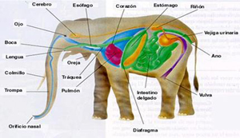

Los mamíferos son vertebrados que de pequeños se alimentan con la leche materna
La mayoría son terrestres, pero también hay acuáticos (ballena) y aéreos (murciélago).
– Cuerpo cubierto de pelo.
– Piel con glándulas que segregan sudor y grasa. Las más características son las glándulas mamarias.
– Son tetrápodos. Sus extremidades tienen forma de patas en los terrestres, aletas en los marinos y alas en los voladores
Funciones:
– Son animales endotérmicos (mantienen constante la temperatura de su cuerpo).
– Respiran por pulmones.
– Su fecundación es interna y son vivíparos.
– Sus hábitos alimentarios son muy variados: hay herbívoros, carnívoros u omnívoros.
